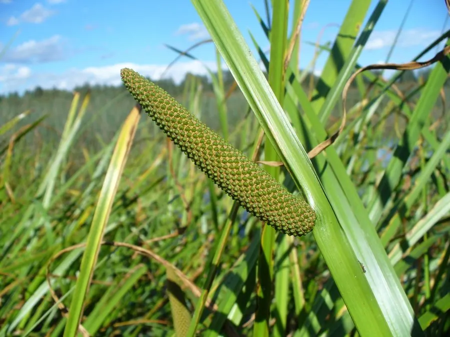

水生植物 · 植物界
菖蒲 Acorus calamus

菖蒲科多年生水生草本，叶似剑、根茎芳香，端午节有挂菖蒲的习俗，根茎可入药和提取香精，是传统的水生药用植物。
- 分类
- 门被子植物门纲木兰纲目菖蒲目科菖蒲科属菖蒲属
- 栖息环境
- 池塘、溪边、水田及湿地浅水处，喜温暖湿润
- 地理分布
- 原产北半球温带，中国各地水边常见，欧洲、北美也有分布
- 保护级别
- 暂无评估
物种志
菖蒲为菖蒲科菖蒲属多年生水生或湿生草本，株高 0.6–1.5 米，根状茎粗壮、横走，有浓郁香气。叶片剑形，长 60–120 厘米，宽 1–2 厘米，直立，排成两列，中脉明显。花序为肉穗花序，圆柱形，长 4–8 厘米，花小，黄绿色，花期 6–9 月；果实为浆果。
菖蒲原产北半球温带，中国、欧洲、北美等地都有分布，生于池塘、溪边和湿地浅水处，喜温暖湿润、阳光充足的环境。它的根状茎含细辛醚等挥发性成分，有特殊香气，中医入药可开窍化痰，也可提取香精；叶片含纤维，可编织。中国端午节有在门上挂菖蒲、艾草的习俗，寓意驱邪避疫。需要注意的是，菖蒲根茎含挥发油，过量内服有毒性，不可自行大量食用。
形态与习性
- 株高0.6–1.5 米，叶片剑形
- 花期6–9 月，肉穗花序黄绿色
- 果期8–10 月，浆果
- 光照喜充足阳光，也耐半阴
- 水分生于浅水或湿润土壤，水深 10–30 厘米
- 土壤富含腐殖质的沼泽土或塘泥
- 繁殖根状茎分株繁殖
- 主要用途端午节习俗用植物、根茎入药、提取香精
趣味知识
- 菖蒲叶片剑形直立，端午节民间有把菖蒲和艾草挂在门上的习俗。
- 它的根状茎含细辛醚等挥发性成分，有特殊香气，可入药和提取香精。
- 菖蒲与石菖蒲同属不同种，后者植株较小，常作盆景和药用。
- 根茎含挥发油，过量内服有毒性，不可自行大量食用。